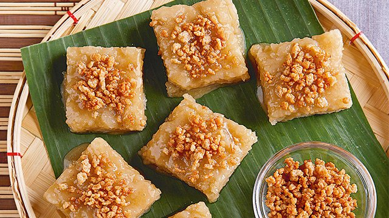

Cheflib - Filipino Sticky Rice Dishes
Sapin Sapin

Ingredients:
- Glutinous rice flour
- Coconut milk
- Sugar
- Ube (purple yam) extract
- Langka (jackfruit) extract
- Pandan extract
- Food coloring (optional)
- Latik (coconut caramel) for topping
Instructions:
- Mix glutinous rice flour, coconut milk, and sugar until smooth.
- Divide the mixture into portions and add flavorings and food coloring to each portion.
- Layer each portion in a greased pan and steam until set.
- Top with latik before serving.
Puto Bumbong

Ingredients:
- Glutinous rice flour
- Brown sugar
- Water
- Bamboo tubes (bumbong)
- Grated coconut
Instructions:
- Soak glutinous rice in water overnight, then grind.
- Mix the ground rice with water to form a dough.
- Fill bamboo tubes with the dough and steam until cooked.
- Serve with grated coconut and brown sugar.
Biko

Ingredients:
- 2 cups of Glutinous Rice
- 3/4 Brown sugar
- 3 1/2 cups of Dilluted Coconut Milk
- 1/2 tsp Salt
- Fried coconut milk(latik)
Instructions:
- Cook the glutinous rice.
- Simmer the coconut milk sugar mixture.
- Cook until thickened.
- Prepare your baking dish.
- Transfer to the prepared baking dish.
- Serve it in banana leaves.
Suman

Ingredients:
- 1 cup glutinous rice (soaked overnight)
- 1/2 cup coconut milk1/2 cup coconut milk
- 1/4 cup sugar (or to taste)
- 1/4 teaspoon salt
- 1/2 teaspoon vanilla extract (optional)
- Banana leaves, cut into squares (for wrapping)
Instructions:
- Rinse the rice well. Soak it in water overnight.
- Drain the rice. In a pot, combine rice, coconut milk, sugar, and salt.
- In a steamer, steam the rice mixture for 45-60 minutes, or until cooked through.
- If using banana leaves, soften them with heat. Wrap spoonfuls of cooked rice in banana leaves.
- Transfer to the plate.
- Serve it cool.
Kutsinta

Ingredients:
- 1 cup Cassava Flour Tapioca Starch
- 1 cup All-Purpose Flour
- 1 cup Brown Sugar (or to taste)
- 2 cups Water
- 2 tsp Lye Water
- Orange Dye Food Coloring
- Grated Fresh Coconut
Instructions:
- In a large bowl, Combine tapioca starch, all purpose flour, brown sugar and water. Mix it well.
- Preapare a 1tsp of water to dissolve the food coloring and addd to the mixture.
- Add the mixture with lye water combine and mix it well.
- Prepare a molder and put the mixture in it, preheat your steamer.
- Arrange your molder in the steamer and steam it in 18-20 mins.
- Unmold and arrange it the plate, Serve it with grated fresh coconut.